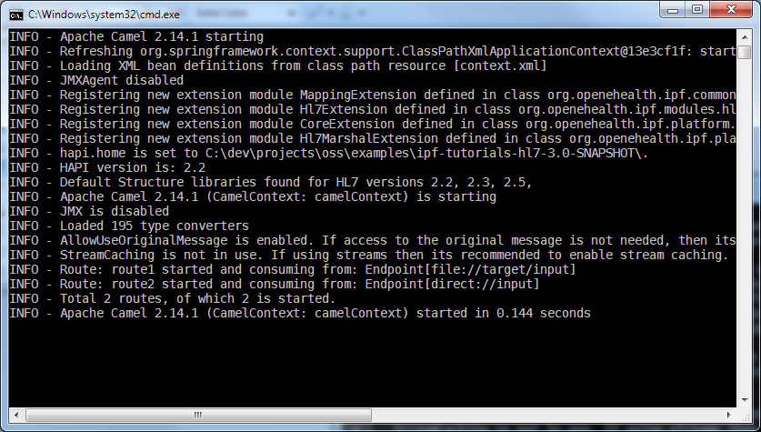

HL7 Support Tutorial
This tutorial guides you through an HL7 version 2 message processing example.
Subject of this tutorial
We will create an IPF application that reads an HL7 v2 message from a file endpoint, validates and transforms the message, and writes the transformation result to an output file. Message processing is done via IPF’s HL7 DSL and via HL7-specific extensions to the Camel DSL.
Validation
The message is an ADT A01 message, version 2.2, and we want to enforce that
- all primitive type values have the correct format and
- the message itself contains a defined sequence of segments
Transformation
Now lets look the transformation we want to perform if we passed validation.
- The room number and bed number from the PV1[3] field shall be dropped. This field is a composite field and we want to drop the second and the third component.
- The birth date in PID[7] shall be reformatted by dropping the last 6 digits. This field is also a composite field with only a single component.
- The gender code in PID[8] shall be mapped to a code from another code system. We will use a simple code mapping service for that.
Finally, we will derive the destination file name from the MSH[4] field (sending facility).

Route Design
Here’s the order in which the message will be processed:
- An HL7 message is received via a file endpoint.
- The message is validated as described above.
- The message is forwarded to a transformer that makes the changes to the HL7 message as described above.
- The transformation result is placed into different files whose names are derived from the MSH[4] field.
Create the Project
Create an IPF example project using the basic IPF Maven archetype:
mvn org.apache.maven.plugins:maven-archetype-plugin:2.0-alpha-4:generate -DarchetypeGroupId=org.openehealth.ipf.archetypes -DarchetypeArtifactId=ipf-archetype-basic -DarchetypeVersion=3.0.0 -DgroupId=org.openehealth.tutorial -DartifactId=hl7 -Dversion=1.0-SNAPSHOT -DinteractiveMode=false
This will create a folder named hl7 in the current directory. Change to this directory and build the project:
mvn clean install
This will build the project and install the project artifacts into your local Maven cache. You can also import the project into your favorite IDE.
Extend the project descriptor
In order to enable HL7 processing we have to include further dependencies into the Maven project descriptor pom.xml.
<dependencies>
<dependency>
<groupId>org.openehealth.ipf.platform-camel</groupId>
<artifactId>ipf-platform-camel-hl7</artifactId>
</dependency>
<dependency>
<groupId>org.openehealth.ipf.commons</groupId>
<artifactId>ipf-commons-spring</artifactId>
</dependency>
<dependency>
<groupId>org.apache.camel</groupId>
<artifactId>camel-groovy</artifactId>
</dependency>
<dependency>
<groupId>ca.uhn.hapi</groupId>
<artifactId>hapi-structures-v22</artifactId>
</dependency>
<dependency>
<groupId>ca.uhn.hapi</groupId>
<artifactId>hapi-structures-v23</artifactId>
</dependency>
<dependency>
<groupId>ca.uhn.hapi</groupId>
<artifactId>hapi-structures-v25</artifactId>
</dependency>
<dependency>
<groupId>org.slf4j</groupId>
<artifactId>slf4j-log4j12</artifactId>
</dependency>
<dependency>
<groupId>log4j</groupId>
<artifactId>log4j</artifactId>
</dependency>
</dependencies>
Extend the application context
The components included in the previous section must also be configured in the Spring application context.xml file. This file is located under src/main/resources. In addition to the default configuration created by the archetype we need to
- configure a mapping service that we will use for code mappings
- add a ValidationRuleBuilder bean for HL7 validation
<beans xmlns="http://www.springframework.org/schema/beans"
xmlns:xsi="http://www.w3.org/2001/XMLSchema-instance"
xmlns:camel="http://camel.apache.org/schema/spring"
xmlns:ipf="http://openehealth.org/schema/ipf-commons-core"
xsi:schemaLocation="
http://www.springframework.org/schema/beans
http://www.springframework.org/schema/beans/spring-beans.xsd
http://camel.apache.org/schema/spring
http://camel.apache.org/schema/spring/camel-spring.xsd
http://openehealth.org/schema/ipf-commons-core
http://openehealth.org/schema/ipf-commons-core.xsd">
<camel:camelContext id="camelContext">
<camel:jmxAgent id="agent" disabled="true" />
<camel:routeBuilder ref="routeBuilder"/>
</camel:camelContext>
<bean id="routeBuilder" class="org.openehealth.ipf.tutorials.hl7.route.SampleRouteBuilder"/>
<!-- Registers this Spring context as the one to look up the mapping service -->
<ipf:globalContext id="globalContext"/>
<bean id="mappingService"
class="org.openehealth.ipf.commons.map.SpringBidiMappingService">
<property name="mappingResource" value="classpath:tutorial.map"/>
</bean>
<bean id="myCustomRules" class="org.openehealth.ipf.tutorials.hl7.validation.SampleRulesBuilder"/>
</beans>
Route Definition
Let’s start with an overview of the complete route. Open the SampleRouteBuilder.groovy file and replace the existing routes in the configure() method:
package org.openehealth.ipf.tutorials.hl7.route
import ca.uhn.hl7v2.DefaultHapiContext
import ca.uhn.hl7v2.HapiContext
import org.apache.camel.Exchange
import org.apache.camel.component.hl7.HL7DataFormat
import org.apache.camel.spring.SpringRouteBuilder
import org.openehealth.ipf.tutorials.hl7.validation.SampleRulesBuilder
import static org.apache.camel.component.hl7.HL7.messageConforms
public class SampleRouteBuilder extends SpringRouteBuilder {
void configure() {
// Set up HL7 context with the custom validation rules and disable validation during parsing
HapiContext context = new DefaultHapiContext(lookup(SampleRulesBuilder))
context.getParserConfiguration().setValidating(false)
// Set up Camel HL7 Data format using the HapiContext defined above
HL7DataFormat hl7 = new HL7DataFormat()
hl7.setHapiContext(context)
// Read file from directory and forward to direct endpoint
from('file:target/input')
.convertBodyTo(String)
.to('direct:input')
// Main processing: parse message, validate, transform
from('direct:input')
.unmarshal(hl7)
// validate that the message conforms to the rules defined in the HapiContext
.validate(messageConforms())
.transmogrify { msg ->
msg.PV1[3][2] = '' // clear room nr.
msg.PV1[3][3] = '' // clear bed nr.
msg.PID[7][1] = msg.PID[7][1].value.substring(0, 8) // format birth date
msg.PID[8] = msg.PID[8].mapGender() // map gender
msg
}
// Set header so Camel knows the file to write into
.setHeader(Exchange.FILE_NAME) { exchange ->
exchange.in.body.MSH[4].value + '.hl7'
}
// Convert message to string and write to file
.convertBodyTo(String)
.to('file:target/output')
}
}
In the route we refer to a SampleRulesBuilder validation class that defines the allowed sequence and cardinalities of HL7 groups and segments for this message. The file must be added to the src/main/groovy directory in the subdirectory org/openehealth/tutorial:
package org.openehealth.tutorial
import org.openehealth.ipf.modules.hl7.validation.DefaultValidationContext
import org.openehealth.ipf.modules.hl7.validation.builder.RuleBuilder
import org.openehealth.ipf.modules.hl7.validation.builder.ValidationContextBuilder
class SampleRulesBuilder extends ValidationContextBuilder {
// We define only a subset of the segments defined in the HL7 2.2 spec
public RuleBuilder forContext(DefaultValidationContext context) {
new RuleBuilder(context)
.forVersion('2.2')
.message('ADT', 'A01').abstractSyntax(
'MSH',
'EVN',
'PID',
[ { 'NK1' } ],
'PV1',
[ { INSURANCE(
'IN1',
[ 'IN2' ] ,
[ 'IN3' ]
)}]
)
}
}
The sequence and cardinality of groups and segments is defined in a syntax that is very closely related to the HL7 Abstract Message Syntax. The message is required to contain a MSH, EVN, PID and PV1 segment; it may contain any number of NK1 segments and it may contain a repeatable INSURANCE group. For detail, please read the documentation on HL7 validation.
As our test message matches this definition, we expect the message to pass validation.
The transformation is implemented using a Transmogrifier closure. Inside the closure we use the HL7 DSL in order to manipulate the message context.
The HL7 DSL allows us to do this without dealing with low level HL7 API details. You immediately see how the message is processed by looking at the code.
...
.transmogrify { msg ->
msg.PV1[3][2] = '' // clear room nr.
msg.PV1[3][3] = '' // clear bed nr.
msg.PID[7][1] = msg.PID[7][1].value.substring(0, 8) // format birth date
msg.PID[8] = msg.PID[8].mapGender() // map gender
msg
}
For accessing a message segment, directly use the segment name like msg.PV1 or msg.PID. Fields and sub-fields (components of a composite field) are accessed by indices starting from 1. For example, PV1[3][2] denotes the second component of the third PV1 field. For a complete reference of the HL7 DSL refer to the HL7 DSL documentation.
Code Mapping
Code mapping is done with the mapGender() method. This method translates the English ‘F’ code (female) contained in PID[8] to a German ‘W’ code (weiblich).
The application context configures the code mapping service to use a mappingScript named tutorial-hl7.map. In our example, we only need a single gender mapping table an entry that maps ‘F’ to ‘W’ and one entry that leaves all other codes unchanged.
mappings = {
gender(
F : 'W',
(ELSE) : { it }
)
}
This format is valid Groovy syntax and is understood by the default bi-directional mapping service provided by IPF. For a complete reference refer to the mapping service section of documentation.
Automated Route Testing
For automated testing we will use the following HL7 message:
MSH|^~\&|SAP-ISH|HZL|||20040805152637||ADT^A01|123456|T|2.2|||ER EVN|A01|20040805152637 PID|1||79471||Meier^Elfriede|Meier|19400101000000|F|||Hauptstrasse 23^^Essen^NW^11000^DE^H|||||S|||111-11-1111||||Essen NK1|1|Meier^Elfriede|EMC|Hauptstrasse 23^^Essen^NW^11000^DE|333-4444~333-5555| PV1|1|I|ISKA^13^4|R||||823745217||||||||N|||79237645|||||||||||||||||||||||||20040805000000
After processing we expect the following output:
MSH|^~\&|SAP-ISH|HZL|||20040805152637||ADT^A01|123456|T|2.2|||ER EVN|A01|20040805152637 PID|1||79471||Meier^Elfriede|Meier|19400101|W|||Hauptstrasse 23^^Essen^NW^11000^DE^H|||||S|||111-11-1111||||Essen NK1|1|Meier^Elfriede|EMC|Hauptstrasse 23^^Essen^NW^11000^DE|333-4444~333-5555| PV1|1|I|ISKA|R||||823745217||||||||N|||79237645|||||||||||||||||||||||||20040805000000
Create two files, msg-01.hl7 and msg-01.hl7.expected, with the above content under the src/test/resources folder. These files will be used inside our JUnit test. To implement the test open the SampleRouteTest.java file and replace its content with the following:
package org.openehealth.ipf.tutorials.hl7.route;
import java.io.InputStream;
import java.util.Scanner;
import ca.uhn.hl7v2.HL7Exception;
import ca.uhn.hl7v2.model.Message;
import ca.uhn.hl7v2.parser.PipeParser;
import org.apache.camel.ProducerTemplate;
import org.junit.After;
import org.junit.Before;
import org.junit.Test;
import org.junit.runner.RunWith;
import org.springframework.beans.factory.annotation.Autowired;
import org.springframework.core.io.FileSystemResource;
import org.springframework.test.context.ContextConfiguration;
import org.springframework.test.context.TestExecutionListeners;
import org.springframework.test.context.junit4.SpringJUnit4ClassRunner;
import org.springframework.test.context.support.DependencyInjectionTestExecutionListener;
import static org.junit.Assert.assertEquals;
@RunWith(SpringJUnit4ClassRunner.class)
@TestExecutionListeners({DependencyInjectionTestExecutionListener.class})
@ContextConfiguration(locations = { "/context.xml" })
public class SampleRouteTest {
@Autowired
private ProducerTemplate producerTemplate;
@Test
public void testRoute() throws Exception {
producerTemplate.sendBody("direct:input", getClass().getResourceAsStream("/msg-01.hl7"));
Resource result = new FileSystemResource("target/output/HZL.hl7");
assertEquals(
load(getClass().getResourceAsStream("/msg-01.hl7.expected")).toString(),
load(result.getInputStream()).toString());
}
// Helper method to load and parse a HL7v2 message from a file
protected static <T extends Message> T load(InputStream is) throws HL7Exception {
return (T)new PipeParser().parse(
new Scanner(is).useDelimiter("\\A").next());
}
}
The testRoute method opens an InputStream on the input file and sends that stream in the in-message body to the direct:input endpoint. The processing result is loaded from the created HZL.hl7 file and compared with the expected processing result.
Execute the test in your IDE or run mvn test one the command line.
The test should successfully execute and you should also see an HZL.hl7 file in the target/output directory containing the processing result.
Assembly and Installation
We finally want to create a distribution package from our project, install (unzip) that package somewhere and start a standalone integration server (i.e. an integration server that runs outside your IDE). To create the package enter on the command line:
mvn assembly:assembly
The created package hl7-1.0-SNAPSHOT-bin.zip is written to the project’s target folder. Copy the package to a new location and unzip it. This will create a folder named hl7-1.0-SNAPSHOT with the following content:

- The lib folder contains the project jar file (hl7-1.0-SNAPSHOT.jar) as well as all required runtime dependencies.
- The conf folder contains a log4j.xml configuration file.
- Startup scripts are located directly under the root folder.
Starting the server
The way how the project is packaged can of course be customized by changing the project’s src/main/assembly/bin.xml assembly descriptor. The script startup.sh is currently empty i.e. for testing-purposes you have to run the server on Windows using startup.bat:

Finally, copy the test HL7v2 message msg-01.hl7 into the target/input folder and wait a few seconds. The file is consumed and the transformed result is written into the target/output folder.
Enter Ctrl-C in the console to stop the server.
Summary
In this tutorial, we:
- created a Maven-based IPF project
- added IPF dependencies relevant for HL7 processing
- created a Camel route that reads, parses, validates, transforms, and renders a HL7 message
- executed a unit test that verified the process
- assembled a distribution containing a server executing the code
- tested the running server with an example HL7 message
The source code for this tutorial is located in the ipf-tutorials-hl7 module.